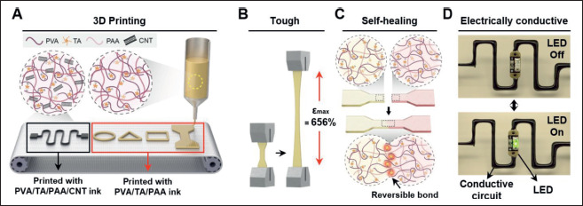

연구 배경과 분류
CNT가 포함된 신축 전도 패턴의 인쇄와 절단 후 전기 연결 회복을 실제 평가했다. 조직 부착·유사 역학은 보조 테마이며 명칭의 섬유에만 한정되지 않는 신축 전극 분류를 사용한다.
연구 배경
전도성 하이드로겔은 압출될 때 흐르면서도 출력 뒤 형상을 유지해야 합니다. 이 연구는 여기에 손상 후 회복 기능을 더합니다. 너무 잘 흐르면 출력선이 무너지고, 항상 탄성체처럼 거동하면 가는 노즐을 통해 내보내기 어렵습니다. 이 상반된 요구 때문에 인쇄 유변학은 최종 전도도와 독립적으로 검토해야 하는 설계 항목입니다.
핵심 접근과 발전
가열·전단 중 약한 수소 결합이 풀려 점도가 낮아지고, 출력 후에는 네트워크가 형상을 지지하는 방식입니다. TA가 없는 PVA/PAA 대조군은 시험한 온도 범위에서 탄성 거동이 우세하여 미세 노즐 압출에 불리했고, TA가 있는 잉크와 유변학적으로 달랐습니다. 이 대조는 가역 네트워크를 조절하는 TA의 역할을 살피며, CNT는 여기에 전기 경로를 더하는 성분입니다. 따라서 가공에 맞는 네트워크와 손상 후 이어질 전도 경로를 함께 설계한 것이며, 충전재 함량만으로 모든 기능을 설명하는 접근은 아닙니다.

다중 재료 하이드로젤 잉크의 3D 인쇄, 인장·자가 치유와 전도성 회로 시연입니다.
Soo A Kim, Yeontaek Lee, Kijun Park 외. “3D printing of mechanically tough and self-healing hydrogels with carbon nanotube fillers”. Figure 1. DOI: 10.18063/ijb.765. CC BY 4.0. 공개 원본 이미지 파일을 바이트 변경 없이 복사했습니다. 크기 변경·자르기·주석·재인코딩은 하지 않았습니다.
평가 방법과 조건
본문은 인쇄 유변학과 형상 유지에 이어 절단·재접합 및 기계적 회복을 평가합니다. 절단·재접합은 전도 경로를 끊었다가 되돌리는 시험이고, 인장 회복은 하중 전달 능력을 확인하는 시험이므로 둘을 구별해야 합니다. 움직임 감지 시연은 이 재료가 변형을 신호로 바꿀 수 있음을 보이며, 이러한 단계적 평가는 인쇄 가능한 재료를 기능성 경로로 연결합니다. 다만 이 시연만으로 장기 착용 조건 전체의 신호 안정성을 확정하지 않습니다.
주요 결과
출력 회로를 자르면 LED가 꺼지고 재접합하면 다시 켜져 전기 연결의 회복을 시각화했습니다. 점등은 기능이 되돌아온 직접적인 관찰이지만, 저항이 원래 값과 정확히 같거나 기계적 하중 수용 능력이 모두 회복되었다는 뜻은 아닙니다. 따라서 이 시연은 별도의 저항·기계적 회복 시험을 보완하는 자료로 읽어야 하며, 파괴 강인성이나 장기 센서 안정성을 대신하는 지표로 사용하지 않습니다.
한계와 남은 질문
확인한 시연만으로는 피부의 땀·탈수·장기 반복 부하에서의 안정성을 확정할 수 없습니다. 출력 방향·선폭·수화 상태와 손상 위치를 맞춰야 회복 성능을 공정하게 비교할 수 있습니다. 같은 절단 위치에서도 출력선 방향과 접합 면적이 달라지면 전기·역학 경로가 달라질 수 있습니다. 현재 글은 확인한 인쇄 및 회복 시험에 한정하며, 피부 부착 시연을 만성 인체 접촉 안전성으로 확장하지 않습니다.
관련 외부 연구
3D printing of conducting polymers
DOI: 10.1038/s41467-020-15316-7 ↗
Yuk의 본문은 PEDOT:PSS 전도 경로와 절연체를 다중 소재로 인쇄한다. 본 연구는 CNT 복합 네트워크의 절단 후 전도 경로 회복이 구체적 비교점이다.
PEDOT:PSS 굽힘과 하이드로겔 절단 시험은 부하가 다르므로 전도도와 회복률을 직접 순위화하지 않는다.
본문 확인교신저자 확인
서정목 교신 확인아래는 서정목의 교신저자 여부에 관한 확인 기록입니다. 저자 순서나 별표만으로 판정하지 않으며, 본문 내용 검증과 별도로 읽어야 합니다.
- 교신 고지 확인 출처 ↗
Corresponding author: Jungmok Seo
author-notes/corresp[@id="cor1"] · public_repository_xml_author_and_correspondence_read
- 본문 확인 범위
- 로컬 게재본 PDF 9–12쪽에서 인쇄 유변학, 회복·전기 시험, Figure 5와 결론을 읽었습니다. 공개 XML의 앞부분 서지·저자 정보와 Figure 1도 별도로 확인했습니다. 추가 본문 확인은 유변학·인쇄 가능성, Figure 2c–d의 TA가 없는 대조군·전단박화 설명과 §3.8 Figure 5의 LED 절단·재연결 시연입니다. 추가 확인은 보충자료(SI) 읽기를 뜻하지 않습니다. 독립 승인 검토에서는 공개 Europe PMC XML의 §§3.2–3.3과 §3.8도 선택적으로 읽었으며 XML 전체 검토를 뜻하지 않습니다.
- 보충자료 확인 범위
- 보충자료(SI)는 읽지 않았습니다. 확인된 보충자료 범위는 비어 있으며, SI 전체 검토를 완료한 것으로 표시하지 않습니다.
- 남은 확인
- SI는 읽지 않았습니다. 땀·탈수·장기 반복 부하에서의 신호 안정성은 미검증이며, 현재 해설은 인쇄와 절단·재연결 시연에 한정합니다.
COVERAGE & OUTREACH
보도와 소개
논문과의 연관성을 확인한 소개 자료입니다. 언론 게재는 독립 취재나 실험 결과의 추가 검증을 뜻하지 않습니다.
이번 검색 범위에서 본문 대조를 마친 관련 소개 링크를 찾지 못했습니다. 관련 자료가 없다는 뜻은 아닙니다.
101편의 채널별 조사 범위와 검색 기록 →근거와 확인 범위
로컬 게재본 PDF 9–12쪽에서 인쇄 유변학, 회복·전기 시험, Figure 5와 결론을 읽었습니다. 공개 XML의 앞부분 서지·저자 정보와 Figure 1도 별도로 확인했습니다. 추가 본문 확인은 유변학·인쇄 가능성, Figure 2c–d의 TA가 없는 대조군·전단박화 설명과 §3.8 Figure 5의 LED 절단·재연결 시연입니다. 추가 확인은 보충자료(SI) 읽기를 뜻하지 않습니다. 독립 승인 검토에서는 공개 Europe PMC XML의 §§3.2–3.3과 §3.8도 선택적으로 읽었으며 XML 전체 검토를 뜻하지 않습니다.
추가 해설은 아래에 명시한 근거 범위에서 편집 검토를 승인한 내용입니다. 모든 본문·보충자료의 검증 완료를 뜻하지 않습니다.
- 추가 본문 확인 범위
- 로컬 게재본 PDF 9–12쪽에서 인쇄 유변학, 회복·전기 시험, Figure 5와 결론을 읽었습니다. 공개 XML의 앞부분 서지·저자 정보와 Figure 1도 별도로 확인했습니다. 추가 본문 확인은 유변학·인쇄 가능성, Figure 2c–d의 TA가 없는 대조군·전단박화 설명과 §3.8 Figure 5의 LED 절단·재연결 시연입니다. 추가 확인은 보충자료(SI) 읽기를 뜻하지 않습니다.
- 추가 보충자료 확인 범위
- 보충자료(SI)는 읽지 않았습니다. 확인된 보충자료 범위는 비어 있으며, SI 전체 검토를 완료한 것으로 표시하지 않습니다.
- 원본 공개 논문 목록 ↗ · #69 · 2026-10-03
- Crossref metadata ↗: Crossref에 등록된 공개 서지 메타데이터만 확인했습니다. 출판사 페이지·초록·본문을 읽었다는 뜻이 아니며, 학교 Chrome 전문 검증은 보류입니다. license_urls는 등록된 링크 목록이며 본문·그림 재배포 허가를 의미하지 않습니다. TDM 또는 게시 정책 링크가 포함될 수 있습니다.
- 3D printing of mechanically tough and self-healing hydrogels with carbon nanotube fillers ↗
publisher_registered_abstract_via_Crossref · message.abstract - 3D printing of mechanically tough and self-healing hydrogels with carbon nanotube fillers ↗
local_pdf_read · BLS12_IntJBioprint_2023_Self_Healing_Hydrogel_Ink_MAIN.pdf; pp. 9–12; Fig. 5; Conclusion; title and DOI matched; PDF not redistributed - 3D printing of mechanically tough and self-healing hydrogels with carbon nanotube fillers ↗
local_pdf_read · pp. 9–12; Fig. 5; Conclusion; title and DOI matched; PDF not redistributed - 3D printing of mechanically tough and self-healing hydrogels with carbon nanotube fillers ↗
local_pdf_read · Local PDF rheology/printability, Fig. 2c–d (TA-free control and shear thinning); §3.8 Fig. 5 (LED cutting/rejoining) - 3D printing of mechanically tough and self-healing hydrogels with carbon nanotube fillers ↗
independent_reviewer_selected_main_text · §§3.2–3.3 and §3.8: network formation, TA-free rheology, LED cutting/rejoining. - 추가 해설의 근거 ↗
연구 배경 · BLS12_IntJBioprint_2023_Self_Healing_Hydrogel_Ink_MAIN.pdf; pp. 9–12; Fig. 5; Conclusion; title and DOI matched; PDF not redistributed · local_pdf_read - 추가 해설의 근거 ↗
평가 방법과 조건 · BLS12_IntJBioprint_2023_Self_Healing_Hydrogel_Ink_MAIN.pdf; pp. 9–12; Fig. 5; Conclusion; title and DOI matched; PDF not redistributed · local_pdf_read - 추가 해설의 근거 ↗
한계와 남은 질문 · BLS12_IntJBioprint_2023_Self_Healing_Hydrogel_Ink_MAIN.pdf; pp. 9–12; Fig. 5; Conclusion; title and DOI matched; PDF not redistributed · local_pdf_read - 추가 해설의 근거 ↗
관련 연구와의 연결 · DOI 10.1038/s41467-020-15316-7; Results: multi-material printing of PEDOT:PSS and insulating PDMS; electrical performance and Fig. 3b–c bending; device demonstration and Fig. 4. Selected main-text paragraphs rechecked; SI not audited. · public_repository_selected_full_text - 추가 해설의 근거 ↗
핵심 접근과 발전 · Local PDF rheology/printability, Fig. 2c–d (TA-free control and shear thinning); §3.8 Fig. 5 (LED cutting/rejoining) · local_pdf_read - 추가 해설의 근거 ↗
주요 결과 · Local PDF rheology/printability, Fig. 2c–d (TA-free control and shear thinning); §3.8 Fig. 5 (LED cutting/rejoining) · local_pdf_read